F5 Identity and Access Management Solutions > 300 Series: Advanced Use Cases & Solutions Source | Edit on
Lab 2: Additional Security - Bot Defense and WAF¶
The API protection profile provides authorization and basic WAF policy to protect an API. This module will demonstrate how to layer on additional protections to further validate what is accessing the API and that the client is behaving within the norms of the API.
Section 2.1 - Setup Lab Environment¶
By default, security events are not logged, in this lab the student will create a security logging profile with Application Security, Bot Defense and DOS Protection enabled. The student will also place the waf policy in trasnparent to show the difference in behavior when client traffic that is deemed malicious is and is not blocked.
Task 1 - Import Postman Collection¶
From the Jumpbox, open Postman via the desktop shortcut or toolbar at the bottom

Click Yes if prompted for “Do you want to allow this app to make changes to your device?”
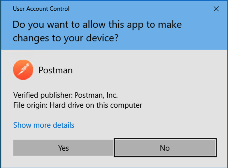
Click Import located on the top left of the Postman application
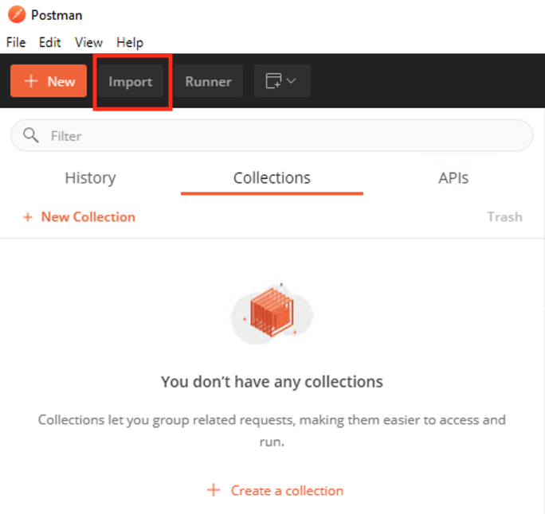
Click Upload Files

Navigate to C:\access-labs\class3\module4\student_files, select student-class3-module4-lab02.postman_collection.json, and click Open
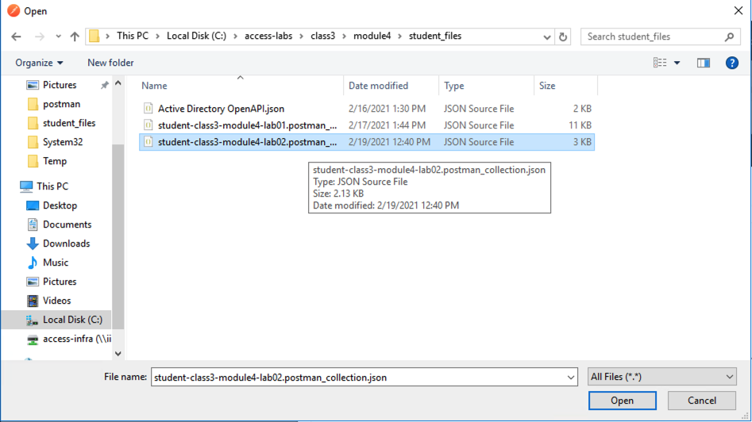
Click Import
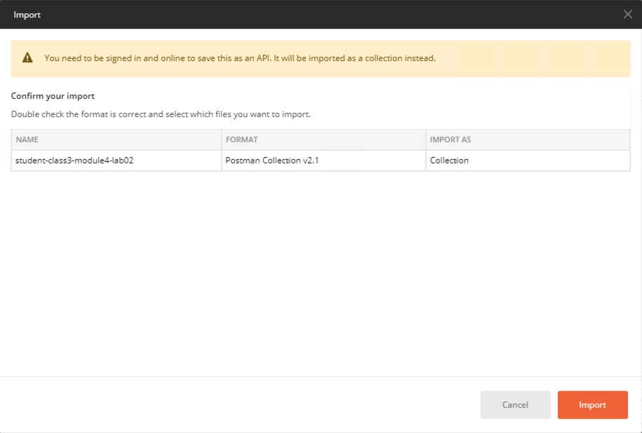
A collection called student-class3-module4-lab02 will appear on the left side in Postman
Task 2 - Add Vulnerable API¶
Note
Ensure you are logged into BIGIP1
From the web browser, navigate to Access >> API Protection >> Profile. Click Profile to modify the existing profile api-protection Profile (not the + Plus symbol)

Click Edit Under Per-Request Policy
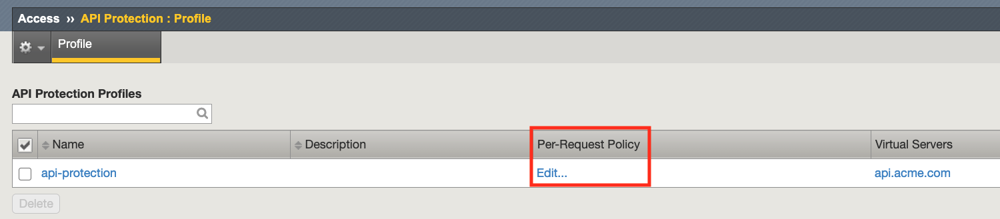
Click the + (Plus Symbol) located between Start and OAuth Scope Check AuthZ
Select the Classification tab
Select Request Classification
Click Add Item
Select Branch Rules
Click Add Branch Rule
Enter name GET /vulnerable
Click Change

Click Add Expression
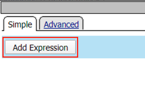
Select Request from the Context dropdown
Click Add Expression

Click Add Expression on the AND line
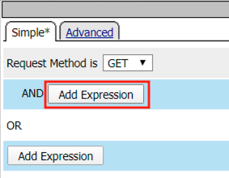
Select Path (value) from the Request dropdown
Enter /vulnerable in the empty text box
Click Add Expression

Click Finished
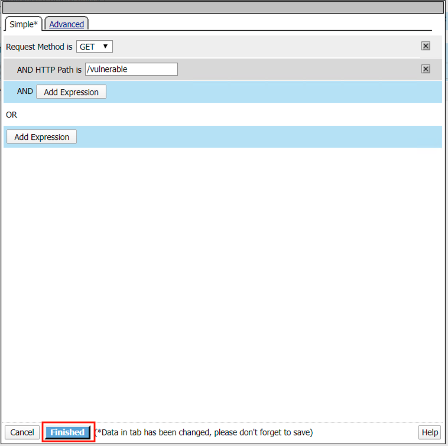
Click Save

Click the + Plus Symbol on the GET /vulnerable branch
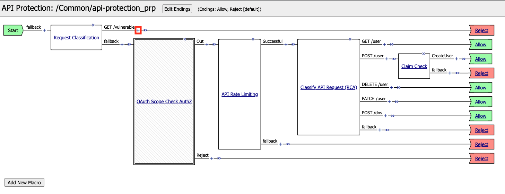
Click API Server Selection
Click Add Item
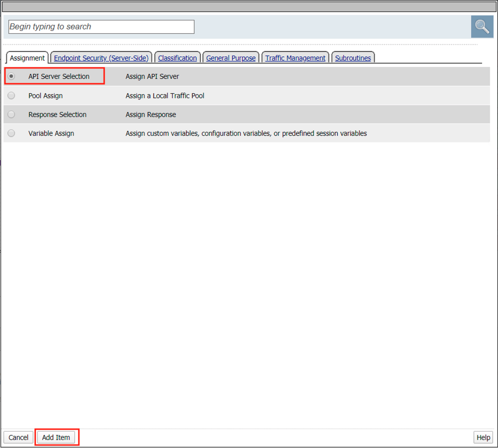
Select api-protection_server1 from the dropdown
Click Save

Click the Reject terminal at the end of API Server Selection
Select Allow
Click Save
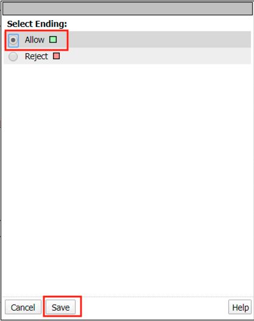
The completed policy should look like the below.
Section 2.2 - Create and Assign Profiles¶
Task 1 - Create and assign a Security Logging Profile to the virtual¶
From the web browser, click on the Security -> Event Logs -> Logging Profile and click Create.
For the Profile Name enter api.acme.com_logprofile.
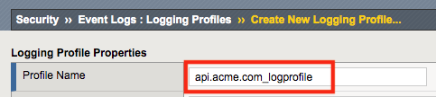
Enable Application Security, an Application Security configuration menu will open up at the bottom. Change the Request Type from Illegal requests only to All requests.

Enable DoS Protection, a DoS Protection configuration menu will open up at the bottom. Enable Local Publisher

Enable Bot Defense, a Bot Defense configuration menu will open up at the bottom. Enable Local Publisher and all other checkboxes, leave Remote Publisher set to none.

Click Create
Apply the log profile to the api.acme.com virtual by navigating to Local Traffic -> Virtual Servers -> api.acme.com -> Security -> Policies and after choosing “Enabled” from the dropdown, set the Selected Log Profile to api.acme.com_logprofile.

Click Update. The virtual will now log Application Security, DoS and Bot related events under Security -> Event Logs when an appropriate security profiles have been applied to the virtual.
Task 2 - Set the WAF policy to Transparent and assign it to the virtual¶
From the web browser, click on the Security -> Application Security -> Security Policies -> Policies List. Click api-protection. Scroll down and you’ll notice the Enforcement Mode is set to Blocking. Set the Enforcement Mode to Transparent. Be sure to click Save, then Apply Policy.

Apply the waf policy to the api.acme.com virtual by navigating to Local Traffic -> Virtual Servers -> api.acme.com -> Security -> Policies and set the Application Security Policy to enabled and the Policy to api-protection.

Click Update.
Task 3 - Create and assign a Bot Defense Profile¶
An api’s clients, unlike a typical web application, will often be non-human, maybe even exclusively. This leaves bot defense more difficult to configure in an api protection scenario, for instance javascript such as captcha cannot be used to proactively determine whether the client is human. In this lab, we demonstrate some scenarios the admin may encounter and how to address them.
Note
Ensure you are logged into BIGIP1
From the web browser, click on the Security -> Bot Defense -> Bot Defense Profiles and click Create.
For the name enter api.acme.com_botprofile, leave all other settings at their defaults.

Click Save
The bot profile is left in transparent mode to demonstrate the logging behavior and behavior differences to the client.
Apply the bot profile to the api.acme.com virtual by navigating to Local Traffic -> Virtual Servers -> api.acme.com -> Security -> Policies.
For Bot Defense Profile select Enabled and select api.acme.com_botprofile as the Profile. Click Update.

{kind=link}
{kind=link}
{kind=link}
{kind=link}
Section 2.3 - Test Bot Protection¶
Task 1 - Test Bot Protection in Transparent Mode¶
Now we will test the Bot Defense Profile to see how it affects clients. Go to Postman, expand the collection student-class3-module4-lab02 and select the request Request 1: Retrieve Attributes and click Send.
Return to the bigip01 gui and navigate to Security -> Event Logs -> Bot Defense -> Bot Requests and find the request to the /vulnerable uri as shown below
Note
The student should pay special attention to the Request Status, Mitigation Action and Bot Class. Bot Class will be one of the categories found in Security -> Bot Defense -> Bot Defense Profiles -> api.acme.com_botprofile -> Bot Mitigation Settings under Mitigation Settings.
{kind=link}
Task 2 - Place Bot Profile in blocking and allow appropriate clients¶
The bot profile was left in transparent to demonstrate the behavior, now we will configure the bot profile to block bot traffic. Keep in mind that the bot profile allows for fine-grained control of categories of bots, which bot fits in those categories. We will explore this later.
Navigate back to Security -> Bot Defense -> Bot Defense Profiles -> api.acme.com_botprofile, change the Enforcement Mode to Blocking and click Save.

Go back to Postman once again and select the request Request 1: Retrieve Attributes and click Send another time.
Return to the bigip01 gui and navigate to Security -> Event Logs -> Bot Defense -> Bot Requests and find the 2nd request to the /vulnerable uri as shown below
Note
Why was this request not blocked? To understand this, we must take a closer look at the Mitigation Settings.
{kind=link}
Navigate to Security -> Bot Defense -> Bot Defense Profiles -> api.acme.com_botprofile -> Bot Mitigation Settings and examine the Unknown categorization, note that bots that are of category Unknown are simply rate limited.

Go back to Postman once again, click on the Arrow in the right corner of the collection student-class3-module4-lab02 collection to open Runner.
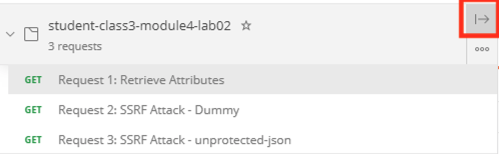
Click Run
Configure Runner so iterations is set to 100 and the only request selected is Request 1: Retrieve Attributes.
Click Run student-class….
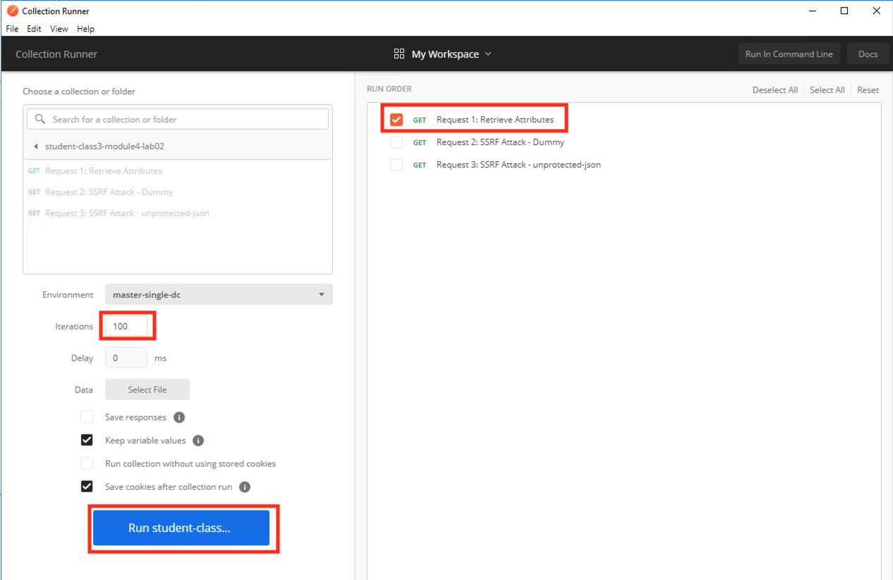
Notice all responses are 200 OKs.
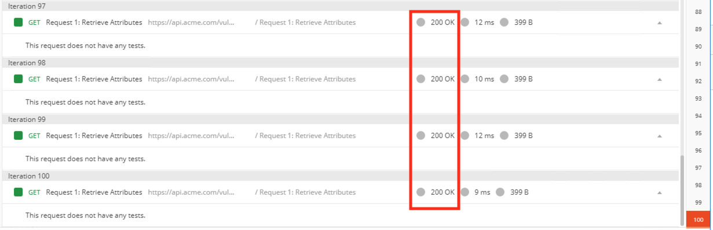
Return to the bigip01 gui and navigate to Security -> Event Logs -> Bot Defense -> Bot Requests and find the Denied request to the /vulnerable uri as shown below.

We will recategorize the Postman client so that it is a trusted client, this is done via bot signatures. Navigate to Security -> Bot Defense -> Bot Signatures -> Bot Signatures Categories List and click Create.
Fill in the Bot Signature Category Name of Trusted Development Tools and select Trusted Bot from the Bot Class dropdown.
Navigate to Security -> Bot Defense -> Bot Signatures -> Bot Signatures List and click Create.
Fill in the Bot Name, Bot Category and Rule (User Agent) with the following, leaving all other values at their defaults.

Click Save.
Go back to Postman once again and select the request Request 1: Retrieve Attributes and click Send another time. Note this is done at the main Postman window, not in Runner.
Navigate to Security -> Event Logs -> Bot Defense -> Bot Requests and find the Trusted Bot categorized request to the /vulnerable uri as shown below
{kind=link}
{kind=link}
{kind=link}
Section 2.4 - Layer on WAF to provide additional security¶
APIs are a collection of technologies just like any other application, in the lab the api is built on top of a windows server using powershell. This lab demonstrate how to tune the WAF policy to use attack signatures and meta-character enforcement to provide additional protection against malicious clients.
Meta-character enforcement allows the WAF admin to enforce which characters are allowed into a web application, whether it be in the header, url or parameter. In this lab we examine parameter meta-character enforcement.
Task 1 - Configure Attack Signatures and Change WAF Policy to Blocking¶
Open a command prompt on the jumphost (a shortcut is on the desktop)
Run the following command curl -k “https://api.acme.com/vulnerable?Inject=|powershell%20badprogram.ps1” -v
Note
Pay special attention to the double quotes (“”) around the url.
Navigate to Security -> Event Logs -> Application -> Requests and find this latest request. Locate the parameter value |powershell badprogram.ps1. Click the parameter and then hover over the parameter value and additional details will describe this part of the attack.

Note
The Enforcement Action is None
The F5 WAF highlights the part of the request it detects as malicious based on the policy’s configuration. This can be very useful for learning and troubleshooting purposes.
Next hover over the User-Agent portion of the request.

Notice the user-agent is curl, which may be a legitimate client. Make note of this.
Ideally we want to block any malicious request, in this case the powershell execution attempt, but want to allow curl as it’s a legitimate client in our case. What about the %20 meta character, should it be allowed? Depending on the application, this could be legitimate.
In your environment, you must decide what is legitimate and what is illegitimate traffic, the F5 WAF can guide you via learning and help eliminate noise using Bot Defense, however to increase security beyond a basic WAF policy, understanding the application is needed.
Click on the Security -> Application Security -> Policy Building -> Learning and Blocking Settings -> Attack Signatures and click Change
Enable Command Execution Signatures and click Change
Scroll to the bottom anc click Save.

Navigate to Security -> Application Security -> Security Policies -> Policies List.
Click api-protection
Click Attack Signatures
Click the filter icon to easily locate the Automated client access “curl” signature.
For the Attack Signature Name enter Automated client access “curl” and click Apply Filter.
The result is

Select this signature and click Disable
Click General Settings and scroll down to “Enforcement Mode” and change it to “Blocking.” Click Save and then Apply the Policy
Once again run the following command curl -k “https://api.acme.com/vulnerable?Inject=|powershell%20badprogram.ps1” -v
Pay special attention to the double quotes (“”) around the url.
Navigate to Security -> Event Logs -> Application -> Requests and find this latest request.
Notice the enforcement action is still None but also notice the user-agent curl is no longer highlighted (since the signature was disabled). We changed the Policy to Blocking so why wasn’t the request blocked? Hint: Click the “1” under Occurrences and you’ll see the current status of the Attack Signature.
Hover over the highlighted payload and notice that the powershell attack signature is triggered.
Powershell execution via http parameters is now mitigated. If you noticed in the request, that the | is considered illegal. What if that character was a legitimate value for a parameter?

Go back to the command prompt on the jumphost and run
curl -k “https://api.acme.com/vulnerable?param1=|legitimate%20value” -v
Navigate to Security -> Event Logs -> Application -> Requests and find this latest request. Notice the | is considered illegal. However its not blocked, the Enforcement Action is None
To see why this parameter character violation is not being blocked, but is being logged (alarmed). Navaigate to Security -> Application Security -> Policy Building -> Learning and Blocking Settings -> Parameters and enable the Block column for the Illegal meta character in value under the Parameters Section

Click Save then Apply Policy
Go back to the command prompt on the jumphost and run
curl -k “https://api.acme.com/vulnerable?param1=|legitimate%20value” -v
Navigate to Security -> Event Logs -> Application -> Requests and find this latest request. Notice the | is considered illegal and is now blocked.

{kind=link}
{kind=link}
{kind=link}
{kind=link}
{kind=link}
{kind=link}
{kind=link}
{kind=link}
{kind=link}
{kind=link}
Task 2 - Implement Static Parameter values¶
From Postman, click “Send” on the Request 2: SSRF Attack-Google request.
From Postman, run Request 3: SSRF Attack-unprotected-json. This site contains an example ID and Secret key in JSON format. You can now see the endpoint is vulnerable to Server Side Request Forgery attacks because the endpoint can be directed to locations other than Google. Hackers will uses your servers as a jump off point to gain access to internal resources.
Navigate to Security -> Event Logs -> Application -> Requests and find both requests. Notice nothing appears malicious about these requests except for the destinations.

We are going to secure the the uri parameter, so it only allows access to Google, but not access to the internal private data.
Navigate to Security -> Application Security -> Parameters -> Parameters List. Click the + Plus Symbol
Enter the Name uri
Uncheck Perform Staging
From the Parameter Value Type dropdown select Static Content Value
Enter https://www.google.com for the New Static Value
Click Add
Click Create
Click Apply Policy
From Postman, run Request 2: SSRF Attack-Google. Access to Google is still allowed.
From Post, run Request 3: SSRF Attack-unprotected-json. This site is now blocked as intended

Navigate to Security -> Event Logs -> Application -> Requests and find the latest blocked request. The uri parameter is highlighted due to Illegal Static Parameter Value.
{kind=link}
{kind=link}
{kind=link}
{kind=link}
{kind=link}